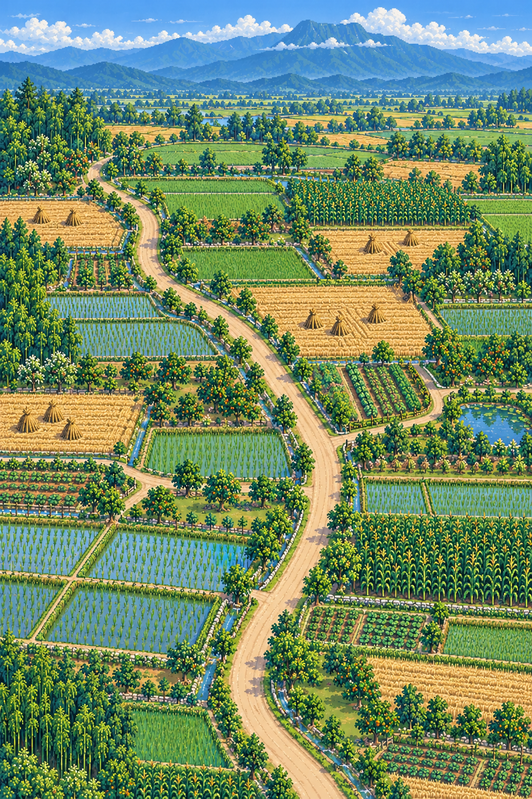

<!doctype html>
<html lang="zh-CN">
<meta charset="utf-8">
<meta name="viewport" content="width=device-width,initial-scale=1">
<title>裳泓村 · 麦收田园无桥三案</title>
<style>
  :root{color-scheme:dark;font-family:"PingFang SC","Microsoft YaHei",sans-serif}
  *{box-sizing:border-box}body{margin:0;background:#17231a;color:#fff3d2}
  main{width:min(96vw,900px);margin:auto;padding:18px}h1{margin:0 0 6px;font-size:24px}
  p{color:#d4c49b;line-height:1.65}nav{display:grid;grid-template-columns:repeat(3,1fr);gap:8px;margin:14px 0}
  button{padding:11px 7px;border:1px solid #806c46;border-radius:9px;background:#292216;color:#f4e5bc;font-weight:700;cursor:pointer}
  button.on{border-color:#dce896;background:#52602d;box-shadow:0 0 0 2px #dce89633 inset}
  figure{margin:0;border:2px solid #8e7749;border-radius:14px;overflow:hidden;background:#1e1a12;box-shadow:0 18px 48px #0008}
  img{display:block;width:100%;image-rendering:pixelated}figcaption{padding:12px 14px;color:#f1dda8;line-height:1.6}
  .fact{margin-top:12px;padding:10px 12px;border:1px solid #576b43;border-radius:10px;background:#1d2b1e;color:#c8d7af;font-size:13px}
</style>
<main>
  <h1>裳泓村 · 麦收田园无桥三案</h1>
  <p>以图四为方向继续收束：没有桥，没有穿村河流，没有油菜花海。</p>
  <nav><button class="on" data-i="0">A 稻麦田野</button><button data-i="1">B 果林晒场</button><button data-i="2">C 田边Y形路</button></nav>
  <figure><figcaption id="caption">A：S形主路贯穿，稻田、麦茬和玉米形成最清楚的大块田野节奏。</figcaption></figure>
  <div class="fact">本地事实锁定：0座桥；只有沿田窄灌溉沟，跨路处使用不显露桥体的地下涵管。</div>
</main>
<script>
const items=[
  ["方案A-稻麦田野节奏-v7.png","方案A","A：S形主路贯穿，稻田、麦茬和玉米形成最清楚的大块田野节奏。"],
  ["方案B-果林晒场林盘-v7.png","方案B","B：果树林与竹林围合晒场和粮棚，遮阴更多，村落生活核心最明确。"],
  ["方案C-田边Y形路-v7.png","方案C","C：Y形路最简洁，田块秩序最强；东侧小荷塘完全不跨路。"]
];
const preview=document.querySelector("#preview"),caption=document.querySelector("#caption");
document.querySelectorAll("button").forEach(function(button){button.onclick=function(){document.querySelector("button.on").classList.remove("on");button.classList.add("on");const item=items[Number(button.dataset.i)];preview.src=item[0];preview.alt=item[1];caption.textContent=item[2];};});
</script>
</html>
